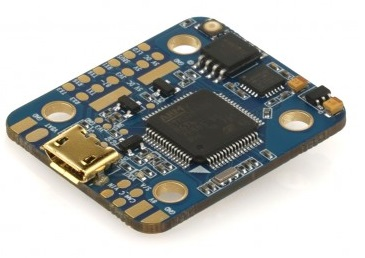
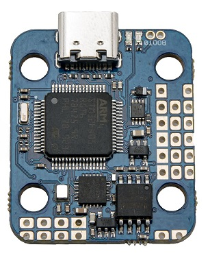
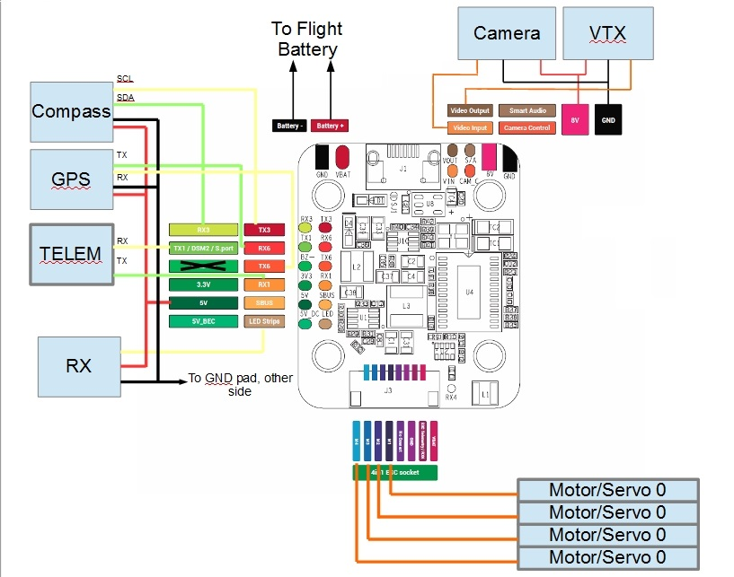
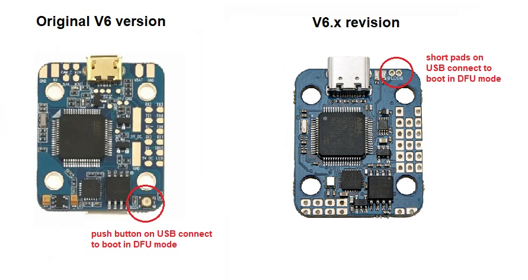
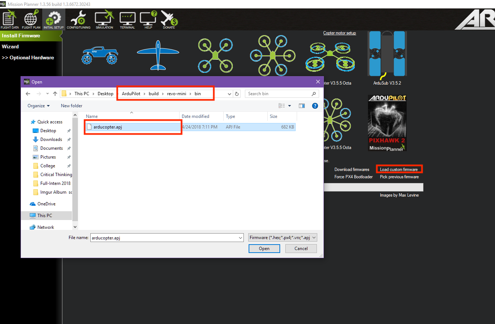

Omnibus F4 Nano V6 and V6.x¶
Original Omnibus F4 Nano V6¶
{kind=link}
V6.x hardware revision¶
{kind=link}
Above images and some content courtesy of myairbot.com
Note
Support for this board is available with Copter-3.6.0 (and higher)
Specifications¶
Processor
STM32F405 ARM
Sensors
InvenSense MPU6000 IMU (accel, gyro)
BMP280 barometer
Voltage sensor
Interfaces
2 full UARTS (RX and TX)
1 RX only UART for ESC telemetry
4 PWM outputs
RC input PPM, SBUS, CRSF etc.
I2C port for external compass
USB port
Built-in OSD
Onboard voltage sensor
additional ADC for current sensor on V6.x revision only. Current sensing on original V6 available using ESC telemetry.
Onboard winbond 25Q128 for dataflash-type logging
Where to Buy¶
available from multiple retailers including myairbot.com
Default UART order¶
SERIAL0 = console = USB
SERIAL1 = Telemetry1 = USART1 (only available on original V6 version)
SERIAL2 = Telemetry2 = USART4 (RX only for ESC telemetry)
SERIAL3 = GPS1 = USART6
SERIAL4 = USART3 available in BRD_ALT_CONFIG = 1 (firmware 4.1 or later)
SERIAL5 = not assigned
SERIAL6 = not assigned
Serial protocols can be adjusted to personal preferences.
Dshot capability¶
All motor/servo outputs are Dshot and PWM capable. However, mixing Dshot and normal PWM operation for outputs is restricted into groups, ie. enabling Dshot for an output in a group requires that ALL outputs in that group be configured and used as Dshot, rather than PWM outputs. The output group that must be the same (same PWM rate or Dshot, when configured as a normal servo/motor output) is: 1/2 and 3/4.
Logging¶
Logging to on-board data flash is supported on this controller.
Versions¶
There’s various versions and clones of the OmnibusF4Nano. This refers to the original V6 and subsequent V6.x revision only with onboard BMP280 type barometer.
Board Connections¶
Original V6 version¶
{kind=link}
Typical ArduPlane system
GPS is attached to UART6
Telem is available at UART 1
The shared UART3/I2C pins are enabled for I2C operation in default BRD_ALT_CONFIG = 0 to allow external compass and / or digital airspeed sensor attachment. Alternatively they can be set to UART operation as SERIAL4 in BRD_ALT_CONFIG = 1.
RC input is via pad marked LED on the board and is compatible all RX serial protocols supported by ArduPilot. The Buzzer output pad has no functionality.
V6.x revision¶
Note
This board revision has the fixed inverter moved to USART1 RX pin, so only TX1 pin can be used (output only). 2 full UARTS + I2C is available in BRD_ALT_CONFIG = 1, using RX3 / TX3 pins as SERIAL4. In default BRD_ALT_CONFIG = 0, RX3 and TX3 pins will default to I2C SDA and SCL respectively. RCInput is on WSL2812 pad. I2C and SERIAL3 for GPS / mag combo is on PPM (=SCL), PB9 (=SDA), RX6 and TX6 pads. Make sure to leave solder jumpers for inverter setup disconnected.
{kind=link}
Battery monitoring¶
Original V6 revision¶
Original V6 revision supports analog voltage monitoring on VBAT pin.
Set BATT_MONITOR to 3 (= analog voltage only) and reboot.
Default pin values:
BATT_VOLT_PIN = 12
BATT_VOLT_MULT = 11
Optionally add voltage and / or current monitoring using ESC telemetry capable ESCs. See instructions here.
V6.x revision¶
V6.x revision has an additional ADC available for external current sensor hardware / PDB connection in 4in1 socket / respective pads.
BATT_CURR_PIN = 11
BATT_AMP_PERVLT = 18.2
Set BATT_MONITOR to 4 (= analog voltage and current) and reboot for full battery monitoring support.
Note
Current pin defaults to pin 11 in ardupilot runtime. Alternatively, it can be used for analog RSSI input or connecting an analog airspeed sensor. Adjust BATT_AMP_PERVLT default of 18.2 as required by the individual current sensor hardware used.
Flashing Firmware¶
Usually these boards are sold pre-flashed with Betaflight / iNav firmwares. In order to use ArduPilot, first time flashing requires both the bootloader and the firmware to be updated. Subsequent ArduPilot firmware updates do not require updating the bootloader again.
First time flashing¶
Follow the instructions here using the “arduXXX_with_bl.hex” file for the “OmnibusNanoV6” target.
When instructed to enter DFU mode, locate the DFU button / jumper pads and keep the button pressed / jumper pads shorted while connecting the board to your computer via USB. If done successfully, the red power LED should light solid while the blue activity LED should not light at all.
{kind=link}
Subsequent firmware updates¶
Follow the instructions here but choose “Load Custom Firmware” and browse to the respective “arduXXX.apj” file for the “OmnibusNanoV6” target, or your own .apj file if building your own firmware.
{kind=link}
Compile ArduPilot¶
To build your own firmware, see the instructions on setting up a build environment and compiling the source code: Building the Code
[copywiki destination=”plane,copter,rover,blimp”]